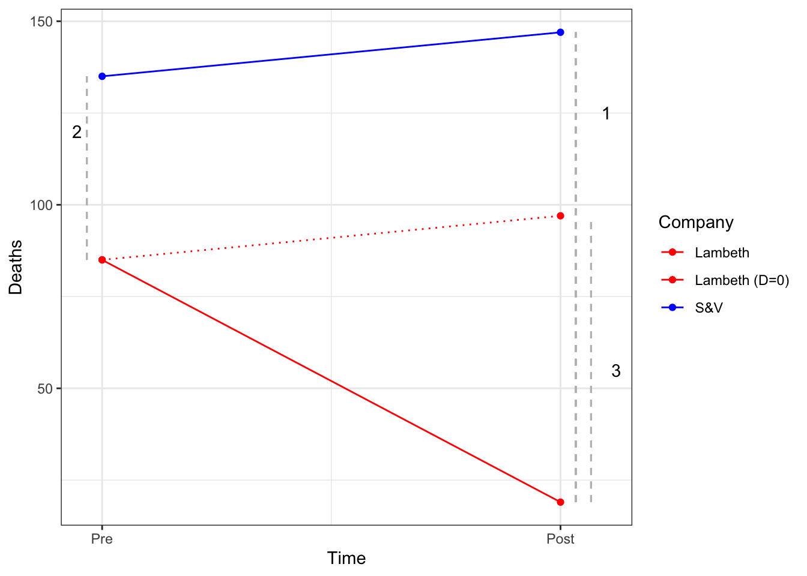

the_packages <- c(
## R Markdown
"kableExtra","DT","texreg",
## Tidyverse
"tidyverse", "lubridate", "forcats", "haven", "labelled",
## Extensions for ggplot
"ggmap","ggrepel", "ggridges", "ggthemes", "ggpubr",
"GGally", "scales", "dagitty", "ggdag", "ggforce",
# Graphics:
"scatterplot3d", #<<
# Data
"COVID19","maps","mapdata","qss","tidycensus", "dataverse",
# Analysis
"DeclareDesign", "easystats", "zoo"
)Week 06:
Linear Regression with Multiple Predictors
Overview
General Plan
- Group Assignment 2: Data
- Setup
- Packages
- Data
- Feedback
- Review
- Causal Inference in Observational Designs
- Simple Linear Regression
- Multiple Regression
- Overview
- Estimating and Interpreting Multiple Regression
- Reading Regression Tables
class: inverse, center, middle # Research Questions
Assignment 1 Research Questions:
Feedback posted to Canvas.
General Comments:
Really great questions!
Feedback tries to balance interest/feasibility/data availability
“Not an experiment” \(\to\) What would you have to randomize to answer your question
Not every question need to be causal
“Make your theories elaborate” - R.A. Fisher to William Cochran
- But keep your models simple - Testa to POLS 1600
Assignment 2: Data Explorations
- A revised description of your group’s research project
- A description of a linear model implied by your question
- R code that loads some potentially relevant data to your question and at least one descriptive summary of that data.
- Some information about your group such as:
- A group name1
- A group color or color scheme
- A group motto, mascot, crest, etc.
- Your group’s theme song
- Your group’s astrological sign
- Anything else that you think well help you form strong ingroup bounds that facilitate collaboration
class:inverse, middle, center # üí™ ## Get set up to work
Packages
Hopefully, you were all able to install the following packages
dataverse(necessary for this week)tidycensus(necessary for this week)easystats(useful later)DeclareDesign(useful later)
Census API:
Additionally, I hope you have all followed the steps here:
- Install the
tidycensuspackage - Load the installed package
- Request an API key from the Census
- Check your email
- Activate your key
- Install your API key in R
- Check that everything worked
To install the an API key so we can download data directly from the US Census
Packages for today
Define a function to load (and if needed install) packages
ipak <- function(pkg){
new.pkg <- pkg[!(pkg %in% installed.packages()[, "Package"])]
if (length(new.pkg))
install.packages(new.pkg, dependencies = TRUE)
sapply(pkg, require, character.only = TRUE)
}Load packages for today
ipak(the_packages) kableExtra DT texreg tidyverse lubridate
TRUE TRUE TRUE TRUE TRUE
forcats haven labelled ggmap ggrepel
TRUE TRUE TRUE TRUE TRUE
ggridges ggthemes ggpubr GGally scales
TRUE TRUE TRUE TRUE TRUE
dagitty ggdag ggforce scatterplot3d COVID19
TRUE TRUE TRUE TRUE TRUE
maps mapdata qss tidycensus dataverse
TRUE TRUE TRUE TRUE TRUE
DeclareDesign easystats zoo
TRUE TRUE TRUE class:inverse, center, middle # üí™ ## Load Data for Thursday‚Äôs Lab
Load the Covid-19 Data
# covid <- COVID19::covid19(
# country = "US",
# level = 2,
# verbose = F
# )
load(url("https://pols1600.paultesta.org/files/data/covid.rda"))Filter Covid-19 Data to US States (Now Excluding D.C. as well)
# Vector containing of US territories
territories <- c(
"American Samoa",
"Guam",
"Northern Mariana Islands",
"Puerto Rico",
"Virgin Islands",
"District of Columbia"
)
# Filter out Territories and create state variable
covid_us <- covid %>%
filter(!administrative_area_level_2 %in% territories)%>%
mutate(
state = administrative_area_level_2
)Mutate: Calculate New Deaths Per Capita and Percent Vaccinated
covid_us %>%
dplyr::group_by(state) %>%
mutate(
new_deaths = deaths - lag(deaths),
new_deaths_pc = new_deaths / population *100000,
new_deaths_pc_14da = zoo::rollmean(new_deaths_pc, k = 14, align = "right", fill=NA ),
percent_vaccinated = people_fully_vaccinated/population*100
) -> covid_usLoad Data on Presidential Elections
# Try this code first
Sys.setenv("DATAVERSE_SERVER" = "dataverse.harvard.edu")
pres_df <- get_dataframe_by_name(
"1976-2020-president.tab",
"doi:10.7910/DVN/42MVDX"
)
# If the code above fails, comment out and uncomment the code below:
# load(url("https://pols1600.paultesta.org/files/data/pres_df.rda"))HLO of Presidential Elections Data
head(pres_df)# A tibble: 6 × 15
year state state_po state_fips state_cen state_ic office candidate
<dbl> <chr> <chr> <dbl> <dbl> <dbl> <chr> <chr>
1 1976 ALABAMA AL 1 63 41 US PRESIDENT "CARTER, JI…
2 1976 ALABAMA AL 1 63 41 US PRESIDENT "FORD, GERA…
3 1976 ALABAMA AL 1 63 41 US PRESIDENT "MADDOX, LE…
4 1976 ALABAMA AL 1 63 41 US PRESIDENT "BUBAR, BEN…
5 1976 ALABAMA AL 1 63 41 US PRESIDENT "HALL, GUS"
6 1976 ALABAMA AL 1 63 41 US PRESIDENT "MACBRIDE, …
# ℹ 7 more variables: party_detailed <chr>, writein <lgl>,
# candidatevotes <dbl>, totalvotes <dbl>, version <dbl>, notes <lgl>,
# party_simplified <chr>Transform Data to get just 2020 Election
pres_df %>%
mutate(
year_election = year,
state = str_to_title(state),
# Fix DC
state = ifelse(state == "District Of Columbia", "District of Columbia", state)
) %>%
filter(party_simplified %in% c("DEMOCRAT","REPUBLICAN"))%>%
filter(year == 2020) %>%
select(state, state_po, year_election, party_simplified, candidatevotes, totalvotes
) %>%
pivot_wider(names_from = party_simplified,
values_from = candidatevotes) %>%
mutate(
dem_voteshare = DEMOCRAT/totalvotes *100,
rep_voteshare = REPUBLICAN/totalvotes*100,
winner = forcats::fct_rev(factor(ifelse(rep_voteshare > dem_voteshare,"Trump","Biden")))
) -> pres2020_dfTransform Data to get just 2020 Election
head(pres2020_df)# A tibble: 6 × 9
state state_po year_election totalvotes DEMOCRAT REPUBLICAN dem_voteshare
<chr> <chr> <dbl> <dbl> <dbl> <dbl> <dbl>
1 Alabama AL 2020 2323282 849624 1441170 36.6
2 Alaska AK 2020 359530 153778 189951 42.8
3 Arizona AZ 2020 3387326 1672143 1661686 49.4
4 Arkansas AR 2020 1219069 423932 760647 34.8
5 California CA 2020 17500881 11110250 6006429 63.5
6 Colorado CO 2020 3279980 1804352 1364607 55.0
# ℹ 2 more variables: rep_voteshare <dbl>, winner <fct>Load Data on Median State Income from the Census
acs_df <- get_acs(geography = "state",
variables = c(med_income = "B19013_001",
med_age = "B01002_001"),
year = 2019)
# Uncomment if get_acs() doesn't work:
# load(url("https://pols1600.paultesta.org/files/data/acs_df.rda"))HLO: Census Data
head(acs_df)# A tibble: 6 × 5
GEOID NAME variable estimate moe
<chr> <chr> <chr> <dbl> <dbl>
1 01 Alabama med_age 39 0.2
2 01 Alabama med_income 50536 304
3 02 Alaska med_age 34.3 0.1
4 02 Alaska med_income 77640 1015
5 04 Arizona med_age 37.7 0.2
6 04 Arizona med_income 58945 266 Tidy Census Data
acs_df %>%
mutate(
state = NAME,
) %>%
select(state, variable, estimate) %>%
pivot_wider(names_from = variable,
values_from = estimate) -> acs_dfTidy Census Data
head(acs_df)# A tibble: 6 × 3
state med_age med_income
<chr> <dbl> <dbl>
1 Alabama 39 50536
2 Alaska 34.3 77640
3 Arizona 37.7 58945
4 Arkansas 38.1 47597
5 California 36.5 75235
6 Colorado 36.7 72331Merge election data into Covid data
# Always check dimensions before and after merging
dim(covid_us)[1] 54246 52dim(pres2020_df)[1] 51 9# Merge covid_us with pres2020_df and save as tmp file
tmp <- covid_us %>% left_join(
pres2020_df,
by = c("state" = "state")
)
dim(tmp) # Same number of rows as covid_us w/ 8 additional columns[1] 54246 60Merge Census data into Covid data
dim(tmp)[1] 54246 60dim(acs_df)[1] 52 3# Merge tmp with acs_df and save as final covid_df file
covid_df <- tmp %>% left_join(
acs_df,
by = c("state" = "state")
)
dim(covid_df) # Same number of rows as tmp w/ 2 additional columns[1] 54246 62Subset Merged data to include only the variables and observations we want
the_vars <- c(
# Covid variables
"state","state_po","date","new_deaths_pc_14da", "percent_vaccinated",
# Election variables
"winner","rep_voteshare",
# Demographic variables
"med_age","med_income","population")
covid_lab <- covid_df %>%
filter( date == "2021-09-23")%>%
select(all_of(the_vars))%>%
ungroup()
length(the_vars)[1] 10dim(covid_lab)[1] 50 10A Preview of Where We’re Headed:
Consider the following multiple regression (which we will on Thursday):
\[\text{New Covid Deaths} = \beta_0 +\beta_1 \text{Rep. Vote Share} +\beta_2 \text{Median Age} +\beta_3 \text{Median Income} + \epsilon\] - The tell us how the outcome, New Covid Deaths, is expected to change with a unit change in a given predictor, controlling for/holding constant the other predictors in the model (more on “controlling for” shortly). - In the model above, \(\beta_2\) tells us how New Covid Deaths is predicted to change, if the Median Age of a state increased by one year (i.e. a unit change). - Similarly, \(\beta_3\) tells us how New Covid Deaths is predicted to change, if the Median Income of a state increased by one dollar (i.e. a unit change).
- Since vote share, median income and age are measured on very different scales, interpreting these coefficients in the same model can be cumbersome.
Standardizing variables.
When variables are measured in different units multiple regression coefficients can be hard to interpret
- Coefficients, \(\beta\), tell us about the predicted change in \(y\) for a unit change in \(x\) or \(z\)
- For example \(\beta_{age}\)
z-scores standardize variables so that their unit of measurement no longer matters (QSS p. 103).
To calculate the z-score of a variable \(x\), we simply, substract off the mean and divide by the standard deviaton
\[z\text{-score of x} = \frac{x_i - \mu_{x}}{\sigma_x}\]
- The z-score of Age is
\[z\text{-score of Age} = \frac{\text{Age}_i - \mu_{Age}}{\sigma_{Age}}\]
Standardizing Predictors in R
covid_lab %>%
mutate(
rep_voteshare_std = (rep_voteshare - mean(rep_voteshare))/sd(rep_voteshare),
med_age_std = ( med_age - mean( med_age))/sd( med_age),
med_income_std = (med_income - mean(med_income))/sd(med_income),
percent_vaccinated_std = (percent_vaccinated - mean(percent_vaccinated))/sd(percent_vaccinated)
) -> covid_labMultiple Regression with Standardized Predictors
If we were to estimate a model with standardized predictors:
\[\text{New Covid Deaths} = \beta_0 +\beta_1 \text{Rep. Vote Share}_{std} +\beta_2 \text{Median Age}_{std} +\beta_3 \text{Median Income}_{std} + \epsilon\] The coefficients still tell us predicted change in New Covid Deaths for a unit change in a predictor, but now a unit change corresponds to a 1-standard deviation increase of each predictor:
covid_lab %>%
summarise(
sd_rep_vote = sd(rep_voteshare),
sd_med_age = sd(med_age),
sd_med_income = sd(med_income),
sd_rep_vote_std = sd(rep_voteshare_std),
sd_med_age_std = sd(med_age_std),
sd_med_income_std = sd(med_income_std)
)# A tibble: 1 × 6
sd_rep_vote sd_med_age sd_med_income sd_rep_vote_std sd_med_age_std
<dbl> <dbl> <dbl> <dbl> <dbl>
1 10.4 2.36 10288. 1 1
# ℹ 1 more variable: sd_med_income_std <dbl>Saving Data
Finally, I’ll save the data for Thursday’s lab
# Don't run this code
save(covid_lab, file = "../files/data/06_lab.rda")And on Thursday, we’ll be able to load the covid_lab just by running:
load(url("https://pols1600.paultesta.org/files/data/06_lab.rda"))class:inverse, middle, center # üîç ## Review
Review
- Casual Inference in Observational Designs
- Difference-in-Differences
- Regression Discontinuity Design
- Instrumental Variables
- Simple Linear Regression
Review
- Casual Inference in Observational Designs
- Difference-in-Differences
- Regression Discontinuity Design
- Instrumental Variables
- Simple Linear Regression
class:inverse, middle, center # üîç ## Casual Inference in Observational Designs
Review: Casual Inference in Observational Designs
- Observational designs that try to estimate causal effects need to justify assumptions about conditional independence:
\[ Y_i(1),Y_i(0), Y_i, U_i \perp D_i |X_i \]
–
- This assumption goes by many, jargony names: Selection on Observables, Conditional Independence, No unmeasured confounders.
–
- Credibility of this assumption depends less on having a lot of data, and more on how your data were generated.
–
\(Y_i(1),Y_i(0) \perp D_i \mid X_i\) doesn’t mean that D has no effect on \(Y\)
Instead it means, that what we can estimate \(E[Y_i|D_i=1,X_i]\) and treat this as a good (unbiased) estimate of \(E[Y_i(1)]\) and similarly \(E[Y_i|D_i=0,X_i]\) is a good estimate of \(E[Y_i(0)]\)
Observational Designs for Causal Inference
Three common research designs:
Difference in Difference Design
Regression Discontinuity Designs
Instrumental Variable Designs
class: inverse, center, middle # üí° Difference in Differences
class: inverse, center, middle background-image:url(https://www.finebooksmagazine.com/sites/default/files/styles/gallery_item/public/media-images/2020-11/map-lead-4.jpg?h=2ded5a3f&itok=Mn-K5rQc) background-size: cover ## London in the Time of Cholera
Motivating Example: What causes Cholera?
In the 1800s, cholera was thought to be transmitted through the air.
John Snow (the physician, not the snack), to explore the origins eventunally concluding that cholera was transmitted through living organisms in water.
Leveraged a natural experiment in which one water company in London moved its pipes further upstream (reducing contamination for Lambeth), while other companies kept their pumps serving Southwark and Vauxhall in the same location.
Notation
Let’s adopt a little notation to help us think about the logic of Snow’s design:
\(D\): treatment indicator, 1 for treated neighborhoods (Lambeth), 0 for control neighborhoods (Southwark and Vauxhall)
\(T\): period indicator, 1 if post treatment (1854), 0 if pre-treatment (1849).
\(Y_{di}(t)\) the potential outcome of unit \(i\)
\(Y_{1i}(t)\) the potential outcome of unit \(i\) when treated between the two periods
\(Y_{0i}(t)\) the potential outcome of unit \(i\) when control between the two periods
Causal Effects
The individual causal effect for unit i at time t is:
\[\tau_{it} = Y_{1i}(t) − Y_{0i}(t)\]
What we observe is
\[Y_i(t) = Y_{0i}(t)\cdot(1 − D_i(t)) + Y_{1i}(t)\cdot D_i(t)\]
\(D\) only equals 1, when \(T\) equals 1, so we never observe \(Y_0i(1)\) for the treated units.
In words, we don’t know what Lambeth’s outcome would have been in the second period, had they not been treated.
Average Treatment on Treated
Our goal is to estimate the average effect of treatment on treated (ATT):
\[\tau_{ATT} = E[Y_{1i}(1) - Y_{0i}(1)|D=1]\]
That is, what would have happened in Lambeth, had their water company not moved their pipes
Average Treatment on Treated
Our goal is to estimate the average effect of treatment on treated (ATT):
We we can observe is:
| Post-Period (T=1) | Pre-Period (T=0) |
||–|-| | Treated \(D_{i}=1\) | \(E[Y_{1i}(1)\vert D_i = 1]\) | \(E[Y_{0i}(0)\vert D_i = 1]\) | | Control \(D_i=0\) | \(E[Y_{0i}(1)\vert D_i = 0]\) | \(E[Y_{0i}(0)\vert D_i = 0]\) |
Data
Because potential outcomes notation is abstract, let’s consider a modified description of the Snow’s cholera death data from Scott Cunningham:
| Company | 1854 (T=1) | 1849 (T=0) |
|---|---|---|
| Lambeth (D=1) | 19 | 85 |
| Southwark and Vauxhall (D=0 | 147 | 135 |
How can we estimate the effect of moving pumps upstream?
Recall, our goal is to estimate the effect of the the treatment on the treated:
\[\tau_{ATT} = E[Y_{1i}(1) - Y_{0i}(1)|D=1]\]
Let’s conisder some strategies Snow could take to estimate this quantity:
Before vs after comparisons:
Snow could have compared Labmeth in 1854 \((E[Y_i(1)|D_i = 1] = 19)\) to Lambeth in 1849 \((E[Y_i(0)|D_i = 1]=85)\), and claimed that moving the pumps upstream led to 66 fewer cholera deaths.
This comparison assumes Lambeth’s pre-treatment outcomes in 1849 are a good proxy for what its outcomes would have been in 1954 if the pumps hadn’t moved \((E[Y_{0i}(1)|D_i = 1])\).
A skeptic might argue that Lambeth in 1849 \(\neq\) Lambeth in 1854
Treatment-Control comparisons in the Post Period.
Snow could have compared outcomes between Lambeth and S&V in 1954 (\(E[Yi(1)|Di = 1] − E[Yi(1)|Di = 0]\)), concluding that the change in pump locations led to 128 fewer deaths.
Here the assumption is that the outcomes in S&V and in 1854 provide a good proxy for what would have happened in Lambeth in 1954 had the pumps not been moved \((E[Y_{0i}(1)|D_i = 1])\)
Again, our skeptic could argue Lambeth \(\neq\) S&V
Difference in Differences
To address these concerns, Snow employed what we now call a difference-in-differences design,
There are two, equivalent ways to view this design.
\[\underbrace{\{E[Y_{i}(1)|D_{i} = 1] − E[Y_{i}(1)|D_{i} = 0]\}}_{\text{1. Treat-Control |Post }}− \overbrace{\{E[Y_{i}(0)|D_{i} = 1] − E[Y_{i}(0)|D_{i}=0 ]\}}^{\text{Treated-Control|Pre}}\]
- Difference 1: Average change between Treated and Control in Post Period
- Difference 2: Average change between Treated and Control in Pre Period
Which is equivalent to:
\[\underbrace{\{E[Y_{i}(1)|D_{i} = 1] − E[Y_{i}(0)|D_{i} = 1]\}}_{\text{Post - Pre |Treated }}− \overbrace{\{E[Y_{i}(1)|D_{i} = 0] − E[Y_{i}(0)|D_{i}=0 ]\}}^{\text{Post-Pre|Control}}\]
- Difference 1: Average change between Treated over time
- Difference 2: Average change between Control over time
Difference in Differences
You’ll see the DiD design represented both ways, but they produce the same result:
\[ \tau_{ATT} = (19-147) - (85-135) = -78 \]
\[ \tau_{ATT} = (19-85) - (147-135) = -78 \]
Identifying Assumption of a Difference in Differences Design
The key assumption in this design is what’s known as the parallel trends assumption: \(E[Y_{0i}(1) − Y_{0i}(0)|D_i = 1] = E[Y_{0i}(1) − Y_{0i}(0)|D_i = 0]\)
- In words: If Lambeth hadn’t moved its pumps, it would have followed a similar path as S&V

Where:
- \(E[Y_{i}(1)|D_{i} = 1] − E[Y_{i}(1)|D_{i} = 0]\)
- \(E[Y_{i}(0)|D_{i} = 1] − E[Y_{i}(0)|D_{i}\} = 0]\)
- \(E[Y_{1i}(1) − Y_{0i}(1)|D_{i} = 1]\)
Summary
A Difference in Differences (DiD, or diff-in-diff) design combines a pre-post comparison, with a treated-control comparison
Taking the pre-post difference removes any fixed differences between the units
Then taking the difference between treated and control differences removes any common differences over time
The key identifying assumption of a DiD design is the “assumption of parallel trends”
- Absent treatment, treated and control groups would see the same changes over time.
- Hard to prove, possible to test
Extensions and limitations
- DiD easy to estimate with linear regression
- Generalizes to multiple periods and treatment interventions
- More pre-treatment periods allow you assess “parallel trends” assumption
- Alternative methods
- Synthetic control
- Event Study Designs
- What if you have multiple treatments or treatments that come and go?
- Panel Matching
- Generalized Synthetic control
Applications
Card and Krueger (1994) What effect did raising the minimum wage in NJ have on employment
Abadie, Diamond, & Hainmueller (2014) What effect did German Unification have on economic development in West Germany
Malesky, Nguyen and Tran (2014) How does decentralization influence public services?
class:inverse, middle, center # üîç # Simple Linear Regression ### Linear regression provides a linear estimate of the CEF
Review: Simple Linear Regression
- Conceptual
- Simple linear regression estimates a line of best fit that summarizes relationships between two variables
\[ y_i = \beta_0 + \beta_1x_i + \epsilon_i \]
- Practical
- We estimate linear models in R using the
lm()function
- We estimate linear models in R using the
lm(y ~ x, data = df)- Technical/Definitional
- Linear regression chooses \(\beta_0\) and \(\beta_1\) to minimize the Sum of Squared Residuals (SSR):
\[\textrm{Find }\hat{\beta_0},\,\hat{\beta_1} \text{ arg min}_{\beta_0, \beta_1} \sum (y_i-(\beta_0+\beta_1x_i))^2\]
- Theoretical
- Linear regression provides a linear estimate of the conditional expectation function (CEF): \(E[Y|X]\)
Linear Regression and the CEF
Recall the first model we fit in last week’s lab
\[\text{new_deaths} = \beta_0 + \beta_1 \text{winner} + \epsilon\]
m1 <- lm(new_deaths ~ winner, covid_df)
m1
Call:
lm(formula = new_deaths ~ winner, data = covid_df)
Coefficients:
(Intercept) winnerBiden
18.99 3.57 m1 is the equation for a very simple line defined by two points:
- \(\beta_0\) = E[new_deaths|winner = Trump]
- \(\beta_0 + \beta_1\) = E[new_deaths|winner = Biden]
Linear Regression and the CEF
It’s helpful to take a look at what’s going on under the hood in lm()
We gave it the following data:
head(m1$model) new_deaths winner
67 0 Biden
68 0 Biden
69 0 Biden
70 0 Biden
71 0 Biden
72 0 BidenLinear Regression and the CEF
- R doesn’t know how to calculate the mean of
Biden(or any character or factor data). - Instead it creates an indicator variable
winnerBidenwhich equals 1 whenwinnerequalsBidenand 0 otherwise.
head(model.matrix(m1)) (Intercept) winnerBiden
67 1 1
68 1 1
69 1 1
70 1 1
71 1 1
72 1 1Linear Regression and the CEF
table(m1$model$winner)
Trump Biden
26538 26788 table(model.matrix(m1)[,2])
0 1
26538 26788 covid_df%>%
mutate(
winner01 = ifelse(winner=="Biden",1,0)
)%>%
ggplot(aes(winner01, new_deaths))+
geom_point()+
stat_summary(geom="point",fun=mean,col= "red",size=2)+
geom_segment(aes(x=0,xend =1,
y=coef(m1)[1],
yend = coef(m1)[1]+coef(m1)[2]*1
),
col= "red")Linear Regression and the CEF
- When the CEF function is linear,
lm()provides you coefficients that give you conditional means like inm1- The CEF is linear for saturated models in like
m1where the coefficients define every possible category of comparison.
- The CEF is linear for saturated models in like
- For continuous variables, like
m3from the lab below,lm()provides a linear approximation to the CEF
m3 <- lm(new_deaths_pc_14da ~ percent_vaccinated, covid_df,
subset = date == "2021-09-23")
m3
Call:
lm(formula = new_deaths_pc_14da ~ percent_vaccinated, data = covid_df,
subset = date == "2021-09-23")
Coefficients:
(Intercept) percent_vaccinated
2.41854 -0.03301 covid_df %>%
filter(date == "2021-09-23") %>%
ggplot(aes(percent_vaccinated, new_deaths_pc_14da))+
geom_point(size=.5,alpha=.5)+
stat_summary_bin(fun = "mean",
geom = "point",
col="red",
bins =10
)+
geom_smooth(method ="lm")class: inverse, middle, center # üí° ## Multiple Regression
Overiew: Multiple Regression
- Conceptual
- Multiple linear regression generalizes simple regression to models with multiple predictors
\[y_i = \beta_0 + \beta_1x_{1,i} +\beta_2x_{2,i} + \epsilon_i\]
\[y_i = X\beta + \epsilon_i\]
- Practical
- We estimate linear models in R using the
lm()function using the+to add predictors - We use the
*to include the main effects \((\beta_1 x, \beta_2z)\) and interactions \((\beta_3 (x\cdot z))\)of two predictors
- We estimate linear models in R using the
lm(y ~ x + z, data = df)
lm(y ~ x*z, data = df) # Is a shortcut for:
lm(y ~ x + z + x:z, data = df)Overiew: Multiple Regression
- Technical/Definitional
- Simple linear regression chooses a \(\hat{\beta_0}\) and \(\hat{\beta_1}\) to minimize the Sum of Squared Residuals (SSR):
\[\textrm{Find }\hat{\beta_0},\,\hat{\beta_1} \text{ arg min}_{\beta_0, \beta_1} \sum (y_i-(\hat{\beta_0}+\hat{\beta_1}x_i))^2\] - Multiple linear regression chooses a vector of coefficients \(\hat{\beta}\) to minimize the Sum of Squared Residuals (SSR):
\[\textrm{Find }\widehat{\beta} \text{ argmin }_{\widehat{\beta}} \sum \epsilon^2=\epsilon^\prime\epsilon=(Y-X\widehat{\beta})^\prime(Y-X\widehat{\beta})\]
- Theoretical
- Multiple Linear regression provides a linear estimate of the conditional expectation function (CEF): \(E[Y|X]\) where \(Y\) is now a function of multiple predictors, \(X\)
class: inverse, middle, center # üí° ## Estimating and Interpreting Multiple Regression Regression Models
Political Interest and Partisan Evaluations
Let’s load some data from the 2016 NES and explore the relationship between political interest and evaluations of presidential candidates:
- Political Interest: “How interested are you in in politics?
- Very Interested
- Somewhat interested
- Not very Interested
- Not at all Interested
- Feeling Thermometer: “… On the feeling thermometer scale of 0 to 100, how would you rate”
- Donald Trump
- Hillary Clinton
Data
load(url("https://pols1600.paultesta.org/files/data/nes.rda"))
# Look at data
dim(nes)[1] 1200 14head(nes) caseid state age gender educ faminc pid7 ideo5 pol_interest church_atd
1 745 Alabama 19 2 3 97 5 3 1 2
2 1115 Alabama 46 1 3 3 1 1 3 6
3 258 Alabama 59 2 2 6 2 3 2 1
4 126 Alabama 55 2 4 6 1 2 3 5
5 414 Alabama 66 1 3 8 7 4 3 3
6 523 Alabama 61 1 2 97 1 2 3 6
bornagain01 ft_trump ft_hrc vote_choice
1 0 3 19 Other
2 0 0 36 HRC
3 1 22 2 <NA>
4 0 1 80 HRC
5 1 100 3 <NA>
6 1 0 100 <NA>Data: HLO
table(nes$pol_interest)
0 1 2 3
78 178 348 568 summary(nes$ft_trump) Min. 1st Qu. Median Mean 3rd Qu. Max. NA's
0.00 2.00 30.00 38.38 72.00 100.00 3 summary(nes$ft_hrc) Min. 1st Qu. Median Mean 3rd Qu. Max. NA's
0.00 3.00 44.00 42.99 76.00 100.00 1 Data Wrangling/Recoding
nes %>%
mutate(
income = ifelse(faminc > 16, NA, faminc),
interested = ifelse(pol_interest==3,T,F),
pol_interest_f = factor(case_when(
pol_interest == 0 ~ "Not at all Interested",
pol_interest == 1 ~ "Not very Interested",
pol_interest == 2 ~ "Somewhat Interested",
pol_interest == 3 ~ "Very Interested"
)),
tc_diff = abs(ft_trump - ft_hrc)
) -> nesRoadmap
Let’s estimate the following series of models, predicting the absolute value of the difference in feeling thermometer ratings between Trump and Clinton (tc_diff)
\[\text{tc_diff} = \beta_0\] \[\text{tc_diff} = \beta_0 + \beta_1\text{interested}\] \[\text{tc_diff} = \beta_0 + \beta_1\text{pol_interest_f}\] \[\text{tc_diff} = \beta_0 + \beta_1\text{pol_interest}\] \[\text{tc_diff} = \beta_0 + \beta_1\text{interested} + \beta_2\text{age}\] \[\text{tc_diff} = \beta_0 + \beta_1\text{interested} + \beta_2\text{age} + \beta_3\text{interested} \times \text{age}\] \[\text{tc_diff} = \beta_0 + \beta_1\text{age} + \beta_2\text{income}\]
m0: “The Empty Model”
A linear model with just an intercept returns the mean of tc_diff
m0 <- lm(tc_diff ~ 1, nes)
m0
Call:
lm(formula = tc_diff ~ 1, data = nes)
Coefficients:
(Intercept)
53.58 mean(nes$tc_diff, na.rm=T)[1] 53.57776# Save Sum of Squared Residuals
ssr0 <- sum(m0$residuals^2)m1 A model with a single dichotomous predictor
Now let’s model tc_diff as function of whether respondents are very interested in politics (interested = T) or not (interested = F)
m1 <- lm(tc_diff ~ interested, nes)
coef(m1) (Intercept) interestedTRUE
47.84500 12.74655 mean(nes$tc_diff[nes$interested == F],na.rm = T)[1] 47.845coef(m1)[1] + coef(m1)[2](Intercept)
60.59155 mean(nes$tc_diff[nes$interested == T],na.rm = T)[1] 60.59155m1 A model with a single dichotomous predictor
- If we tell R not to include an intercept, it returns those conditional means exactly.
m1_alt <- lm(tc_diff ~ -1+ interested, nes)
coef(m1_alt)interestedFALSE interestedTRUE
47.84500 60.59155 tapply(nes$tc_diff, nes$interested, mean,na.rm=T) FALSE TRUE
47.84500 60.59155 m1 A model with a single dichotomous predictor
- When we compare the SSR from
m1we see that it has decreased fromm0reflecting the fact some of the total variation intc_diffis being explained by the variation ininterested
# Save Sum of Squared Residuals
ssr1 <- sum(m1$residuals^2)
ssr1 < ssr0[1] TRUEm2 A model with a single categoical predictor
Now let’s model tc_diff as function of the categorical predictor pol_interest_f, which is a factor variable of the four unique levels of political interest
m2 <- lm(tc_diff ~ pol_interest_f, nes)
m2
Call:
lm(formula = tc_diff ~ pol_interest_f, data = nes)
Coefficients:
(Intercept) pol_interest_fNot very Interested
46.104 1.727
pol_interest_fSomewhat Interested pol_interest_fVery Interested
2.136 14.488 - Woah, why did R turn a single variable into model with four coefficients?
When we give lm() factor or character data,
head(m2$model)[1:4,] tc_diff pol_interest_f
1 16 Not very Interested
2 36 Very Interested
3 20 Somewhat Interested
4 79 Very InterestedIt converts this data in separate binary indicators for each level excluding the first (“Not at all interested”), that take a value of 1 when pol_interest_f equals that level and 0 otherwise
head(model.matrix(m2))[1:4,] (Intercept) pol_interest_fNot very Interested
1 1 1
2 1 0
3 1 0
4 1 0
pol_interest_fSomewhat Interested pol_interest_fVery Interested
1 0 0
2 0 1
3 1 0
4 0 1m2 A model with a single categoical predictor
The coefficients in m2 tell us how the conditional mean of tc_diff for someone with a given level of interest is likely to very from the conditional mean of tc_diff for someone that is not at all interested in politics.
tapply(nes$tc_diff, nes$pol_interest_f, mean,na.rm=T)Not at all Interested Not very Interested Somewhat Interested
46.10390 47.83051 48.23988
Very Interested
60.59155 Not at all interestedis the reference or excluded category, described by the intercept coefficient inm2
m2 A model with a single categoical predictor
# Compare to
# Not at all
coef(m2)[1](Intercept)
46.1039 # Not very
coef(m2)[1] + coef(m2)[2](Intercept)
47.83051 # Somewhat
coef(m2)[1] + coef(m2)[3](Intercept)
48.23988 # Very
coef(m2)[1] + coef(m2)[4](Intercept)
60.59155 m2 A model with a single categorical predictor
- Again if we excluded the intercept
lm()returns the conditional means
m2_alt <- lm(tc_diff ~ -1+ pol_interest_f, nes)
coef(m2_alt)pol_interest_fNot at all Interested pol_interest_fNot very Interested
46.10390 47.83051
pol_interest_fSomewhat Interested pol_interest_fVery Interested
48.23988 60.59155 tapply(nes$tc_diff, nes$pol_interest_f, mean,na.rm=T)Not at all Interested Not very Interested Somewhat Interested
46.10390 47.83051 48.23988
Very Interested
60.59155 m2 A model with a single categorical predictor
- Finally, note that the SSR for
m2is lower than that ofm1. Including more information about varying levels of political interest helped us explain more variation in our outcome
# Save Sum of Squared Residuals
ssr2 <- sum(m2$residuals^2)
ssr2 < ssr1[1] TRUEm3 A model with a single numeric predictor
What if we had instead modeled tc_diff as a function of pol_interest
m3 <- lm(tc_diff ~ pol_interest, nes)
m3
Call:
lm(formula = tc_diff ~ pol_interest, data = nes)
Coefficients:
(Intercept) pol_interest
40.799 6.012 lm() returns a single coefficient, because pol_interest is a numeric variable.
Comparing m2 to m3
nes %>%
ggplot(aes(pol_interest,tc_diff))+
geom_jitter(size=.5, alpha=.5)+
geom_smooth(method ="lm", aes(col = "m3"),se=F)+
stat_summary(geom ="point",
fun = mean,
aes(col = "m2")
)+
labs(col = "Model")Comparing m2 to m3
m4: A model with both a dichtomous and continuous predictor
Now let’s estimate a multiple regression model “controlling” for age
m4 <- lm(tc_diff ~ interested + age, nes)
coef(m4) (Intercept) interestedTRUE age
32.1757944 9.7739375 0.3533876 Note the size of the coefficient on interested has decreased, compared to m1. Part of the variation tc_diff explained by interested reflected variation explained by age
coef(m1)[1](Intercept)
47.845 coef(m4)[2]interestedTRUE
9.773938 - Mechanically, we sometimes say the coefficient on
interestedshifts the intercept of the line describing the relationship betweentc_diffand age.

m5: A model with an interaction between a dichtomous and continuous predictor
What if we think the relationship between age and tc_diff varies depending on a person’s level of political interest?
We could fit an interacton model:
m5 <- lm(tc_diff ~ interested*age, nes)
coef(m5) (Intercept) interestedTRUE age interestedTRUE:age
39.7626421 -6.7040163 0.1822814 0.3396523 Mechanically, R takes the data
head(m5$model) tc_diff interested age
1 16 FALSE 19
2 36 TRUE 46
3 20 FALSE 59
4 79 TRUE 55
5 97 TRUE 66
6 100 TRUE 61And creates a model matrix:
head(model.matrix(m5)) (Intercept) interestedTRUE age interestedTRUE:age
1 1 0 19 0
2 1 1 46 46
3 1 0 59 0
4 1 1 55 55
5 1 1 66 66
6 1 1 61 61m5: A model with an interaction between a dichtomous and continuous predictor
This interaction model essentially estimates separate models describing the relationship between tc_diff and age for the uninterested…
m5_uninterested <- lm(tc_diff ~ age, nes,
subset = interested == F)
coef(m5_uninterested)(Intercept) age
39.7626421 0.1822814 coef(m5)[1](Intercept)
39.76264 coef(m5)[3] age
0.1822814 m5: A model with an interaction between a dichtomous and continuous predictor
And interested
m5_interested <- lm(tc_diff ~ age, nes,
subset = interested == T)
coef(m5_interested)(Intercept) age
33.0586258 0.5219337 coef(m5)[1] +coef(m5)[2](Intercept)
33.05863 coef(m5)[3] +coef(m5)[4] age
0.5219337 nes %>%
filter(!is.na(interested))%>%
ggplot(aes(age, tc_diff, col = interested))+
geom_point(size = .5, alpha = .5)+
geom_smooth(method ="lm")m6: A model with an two continuous predictors
Now lets model tc_diff as a function of two predictors: age and income
m6 <- lm(tc_diff ~ age + income, nes)
m6
Call:
lm(formula = tc_diff ~ age + income, data = nes)
Coefficients:
(Intercept) age income
33.1994 0.4003 0.1573 We interpret this model as saying:
- Controlling for
income, asageincreases by 1 we can expect the predicted difference intc_diffto increase by 0.40 - Controlling for
age, asincomeincreases by 1 we can expect the predicted difference intc_diffto increase by 0.16
Multiplicative interactions with a continuous moderator
Suppose we wanted to fit an interaction between two continuous variables like age and income.
The general form of this model is
\[ Y= \beta_0 + \beta_1X + \beta_2 +\beta_3X\times Z + \epsilon \]
- The marginal effect of X on Y, now depends on the value of Z at which you evaluate the relationship
\[ \frac{\partial Y}{\partial X}=\beta_1+\beta_3Z \]
Easier to show this with some simulated data:
class: inverse, middle, center # üí° ## Reading Regression Tables
Regression Tables
Academic articles are littered with regression tables.
Below we’ll see how to produce regression tables in R
Learn some heuristics for how to interpret regression tables
- We’ll cover the theory behind these heuristics in the coming weeks
Making Regression Tables in R
We can make a very simple regression table using the htmlreg function from the texreg package
texreg::htmlreg(
list(m0,m1,m3,m4,m5,m6)
)<table class="texreg" style="margin: 10px auto;border-collapse: collapse;border-spacing: 0px;caption-side: bottom;color: #000000;border-top: 2px solid #000000;">
<caption>Statistical models</caption>
<thead>
<tr>
<th style="padding-left: 5px;padding-right: 5px;"> </th>
<th style="padding-left: 5px;padding-right: 5px;">Model 1</th>
<th style="padding-left: 5px;padding-right: 5px;">Model 2</th>
<th style="padding-left: 5px;padding-right: 5px;">Model 3</th>
<th style="padding-left: 5px;padding-right: 5px;">Model 4</th>
<th style="padding-left: 5px;padding-right: 5px;">Model 5</th>
<th style="padding-left: 5px;padding-right: 5px;">Model 6</th>
</tr>
</thead>
<tbody>
<tr style="border-top: 1px solid #000000;">
<td style="padding-left: 5px;padding-right: 5px;">(Intercept)</td>
<td style="padding-left: 5px;padding-right: 5px;">53.58<sup>***</sup></td>
<td style="padding-left: 5px;padding-right: 5px;">47.84<sup>***</sup></td>
<td style="padding-left: 5px;padding-right: 5px;">40.80<sup>***</sup></td>
<td style="padding-left: 5px;padding-right: 5px;">32.18<sup>***</sup></td>
<td style="padding-left: 5px;padding-right: 5px;">39.76<sup>***</sup></td>
<td style="padding-left: 5px;padding-right: 5px;">33.20<sup>***</sup></td>
</tr>
<tr>
<td style="padding-left: 5px;padding-right: 5px;"> </td>
<td style="padding-left: 5px;padding-right: 5px;">(0.92)</td>
<td style="padding-left: 5px;padding-right: 5px;">(1.26)</td>
<td style="padding-left: 5px;padding-right: 5px;">(2.35)</td>
<td style="padding-left: 5px;padding-right: 5px;">(2.71)</td>
<td style="padding-left: 5px;padding-right: 5px;">(3.62)</td>
<td style="padding-left: 5px;padding-right: 5px;">(3.35)</td>
</tr>
<tr>
<td style="padding-left: 5px;padding-right: 5px;">interestedTRUE</td>
<td style="padding-left: 5px;padding-right: 5px;"> </td>
<td style="padding-left: 5px;padding-right: 5px;">12.75<sup>***</sup></td>
<td style="padding-left: 5px;padding-right: 5px;"> </td>
<td style="padding-left: 5px;padding-right: 5px;">9.77<sup>***</sup></td>
<td style="padding-left: 5px;padding-right: 5px;">-6.70</td>
<td style="padding-left: 5px;padding-right: 5px;"> </td>
</tr>
<tr>
<td style="padding-left: 5px;padding-right: 5px;"> </td>
<td style="padding-left: 5px;padding-right: 5px;"> </td>
<td style="padding-left: 5px;padding-right: 5px;">(1.81)</td>
<td style="padding-left: 5px;padding-right: 5px;"> </td>
<td style="padding-left: 5px;padding-right: 5px;">(1.84)</td>
<td style="padding-left: 5px;padding-right: 5px;">(5.55)</td>
<td style="padding-left: 5px;padding-right: 5px;"> </td>
</tr>
<tr>
<td style="padding-left: 5px;padding-right: 5px;">pol_interest</td>
<td style="padding-left: 5px;padding-right: 5px;"> </td>
<td style="padding-left: 5px;padding-right: 5px;"> </td>
<td style="padding-left: 5px;padding-right: 5px;">6.01<sup>***</sup></td>
<td style="padding-left: 5px;padding-right: 5px;"> </td>
<td style="padding-left: 5px;padding-right: 5px;"> </td>
<td style="padding-left: 5px;padding-right: 5px;"> </td>
</tr>
<tr>
<td style="padding-left: 5px;padding-right: 5px;"> </td>
<td style="padding-left: 5px;padding-right: 5px;"> </td>
<td style="padding-left: 5px;padding-right: 5px;"> </td>
<td style="padding-left: 5px;padding-right: 5px;">(0.98)</td>
<td style="padding-left: 5px;padding-right: 5px;"> </td>
<td style="padding-left: 5px;padding-right: 5px;"> </td>
<td style="padding-left: 5px;padding-right: 5px;"> </td>
</tr>
<tr>
<td style="padding-left: 5px;padding-right: 5px;">age</td>
<td style="padding-left: 5px;padding-right: 5px;"> </td>
<td style="padding-left: 5px;padding-right: 5px;"> </td>
<td style="padding-left: 5px;padding-right: 5px;"> </td>
<td style="padding-left: 5px;padding-right: 5px;">0.35<sup>***</sup></td>
<td style="padding-left: 5px;padding-right: 5px;">0.18<sup>*</sup></td>
<td style="padding-left: 5px;padding-right: 5px;">0.40<sup>***</sup></td>
</tr>
<tr>
<td style="padding-left: 5px;padding-right: 5px;"> </td>
<td style="padding-left: 5px;padding-right: 5px;"> </td>
<td style="padding-left: 5px;padding-right: 5px;"> </td>
<td style="padding-left: 5px;padding-right: 5px;"> </td>
<td style="padding-left: 5px;padding-right: 5px;">(0.05)</td>
<td style="padding-left: 5px;padding-right: 5px;">(0.08)</td>
<td style="padding-left: 5px;padding-right: 5px;">(0.06)</td>
</tr>
<tr>
<td style="padding-left: 5px;padding-right: 5px;">interestedTRUE:age</td>
<td style="padding-left: 5px;padding-right: 5px;"> </td>
<td style="padding-left: 5px;padding-right: 5px;"> </td>
<td style="padding-left: 5px;padding-right: 5px;"> </td>
<td style="padding-left: 5px;padding-right: 5px;"> </td>
<td style="padding-left: 5px;padding-right: 5px;">0.34<sup>**</sup></td>
<td style="padding-left: 5px;padding-right: 5px;"> </td>
</tr>
<tr>
<td style="padding-left: 5px;padding-right: 5px;"> </td>
<td style="padding-left: 5px;padding-right: 5px;"> </td>
<td style="padding-left: 5px;padding-right: 5px;"> </td>
<td style="padding-left: 5px;padding-right: 5px;"> </td>
<td style="padding-left: 5px;padding-right: 5px;"> </td>
<td style="padding-left: 5px;padding-right: 5px;">(0.11)</td>
<td style="padding-left: 5px;padding-right: 5px;"> </td>
</tr>
<tr>
<td style="padding-left: 5px;padding-right: 5px;">income</td>
<td style="padding-left: 5px;padding-right: 5px;"> </td>
<td style="padding-left: 5px;padding-right: 5px;"> </td>
<td style="padding-left: 5px;padding-right: 5px;"> </td>
<td style="padding-left: 5px;padding-right: 5px;"> </td>
<td style="padding-left: 5px;padding-right: 5px;"> </td>
<td style="padding-left: 5px;padding-right: 5px;">0.16</td>
</tr>
<tr>
<td style="padding-left: 5px;padding-right: 5px;"> </td>
<td style="padding-left: 5px;padding-right: 5px;"> </td>
<td style="padding-left: 5px;padding-right: 5px;"> </td>
<td style="padding-left: 5px;padding-right: 5px;"> </td>
<td style="padding-left: 5px;padding-right: 5px;"> </td>
<td style="padding-left: 5px;padding-right: 5px;"> </td>
<td style="padding-left: 5px;padding-right: 5px;">(0.29)</td>
</tr>
<tr style="border-top: 1px solid #000000;">
<td style="padding-left: 5px;padding-right: 5px;">R<sup>2</sup></td>
<td style="padding-left: 5px;padding-right: 5px;">0.00</td>
<td style="padding-left: 5px;padding-right: 5px;">0.04</td>
<td style="padding-left: 5px;padding-right: 5px;">0.03</td>
<td style="padding-left: 5px;padding-right: 5px;">0.07</td>
<td style="padding-left: 5px;padding-right: 5px;">0.08</td>
<td style="padding-left: 5px;padding-right: 5px;">0.04</td>
</tr>
<tr>
<td style="padding-left: 5px;padding-right: 5px;">Adj. R<sup>2</sup></td>
<td style="padding-left: 5px;padding-right: 5px;">0.00</td>
<td style="padding-left: 5px;padding-right: 5px;">0.04</td>
<td style="padding-left: 5px;padding-right: 5px;">0.03</td>
<td style="padding-left: 5px;padding-right: 5px;">0.07</td>
<td style="padding-left: 5px;padding-right: 5px;">0.08</td>
<td style="padding-left: 5px;padding-right: 5px;">0.04</td>
</tr>
<tr style="border-bottom: 2px solid #000000;">
<td style="padding-left: 5px;padding-right: 5px;">Num. obs.</td>
<td style="padding-left: 5px;padding-right: 5px;">1196</td>
<td style="padding-left: 5px;padding-right: 5px;">1168</td>
<td style="padding-left: 5px;padding-right: 5px;">1168</td>
<td style="padding-left: 5px;padding-right: 5px;">1168</td>
<td style="padding-left: 5px;padding-right: 5px;">1168</td>
<td style="padding-left: 5px;padding-right: 5px;">1049</td>
</tr>
</tbody>
<tfoot>
<tr>
<td style="font-size: 0.8em;" colspan="7"><sup>***</sup>p < 0.001; <sup>**</sup>p < 0.01; <sup>*</sup>p < 0.05</td>
</tr>
</tfoot>
</table>Yuck, we need to set a argument in the chunk header to results=“asis”
```{r echo=F, results = "asis"}`r`''`
texreg::htmlreg(
list(m0,m1,m3,m4,m5,m6)
)
```
| Model 1 | Model 2 | Model 3 | Model 4 | Model 5 | Model 6 | |
|---|---|---|---|---|---|---|
| (Intercept) | 53.58*** | 47.84*** | 40.80*** | 32.18*** | 39.76*** | 33.20*** |
| (0.92) | (1.26) | (2.35) | (2.71) | (3.62) | (3.35) | |
| interestedTRUE | 12.75*** | 9.77*** | -6.70 | |||
| (1.81) | (1.84) | (5.55) | ||||
| pol_interest | 6.01*** | |||||
| (0.98) | ||||||
| age | 0.35*** | 0.18* | 0.40*** | |||
| (0.05) | (0.08) | (0.06) | ||||
| interestedTRUE:age | 0.34** | |||||
| (0.11) | ||||||
| income | 0.16 | |||||
| (0.29) | ||||||
| R2 | 0.00 | 0.04 | 0.03 | 0.07 | 0.08 | 0.04 |
| Adj. R2 | 0.00 | 0.04 | 0.03 | 0.07 | 0.08 | 0.04 |
| Num. obs. | 1196 | 1168 | 1168 | 1168 | 1168 | 1049 |
| ***p < 0.001; **p < 0.01; *p < 0.05 | ||||||
Interpreting Regression Tables (Stargazing)
- Each column is a model
- Each row is a coefficient from that model with its standard error (more to come) in parantheses below
- The bottom of the table shows summary stastitics of the model ( \(R^2\) = proportion of variance explained)
- Coefficients with asterisks
*are statistically significant- It is unlikely that we would see a coefficient this big or bigger if the true coefficient were 0
- Rule of thumb:
\[\text{If }\frac{\beta}{se} > 2 \to \text{Statistically Significant}\]
class: inverse, middle, center # üí° ## Summary
Summary
Today we estimated and interpreted a series of multiple regression models
The coefficients in these models still describe slopes (partial derivatives), now for planes (and hyper planes)
Controlling for variables is easy in
lm()
m1 <- lm(y ~ x, data=df)
m2 <- lm(y ~ x + z, data=df)In the lab and next week, we will start to explore
- What it means to “control for x”
- How can we compare different models
- How can we interpret predictions from multiple regression
Footnotes
If you’re Group 01 don’t change your name to Group 4↩︎